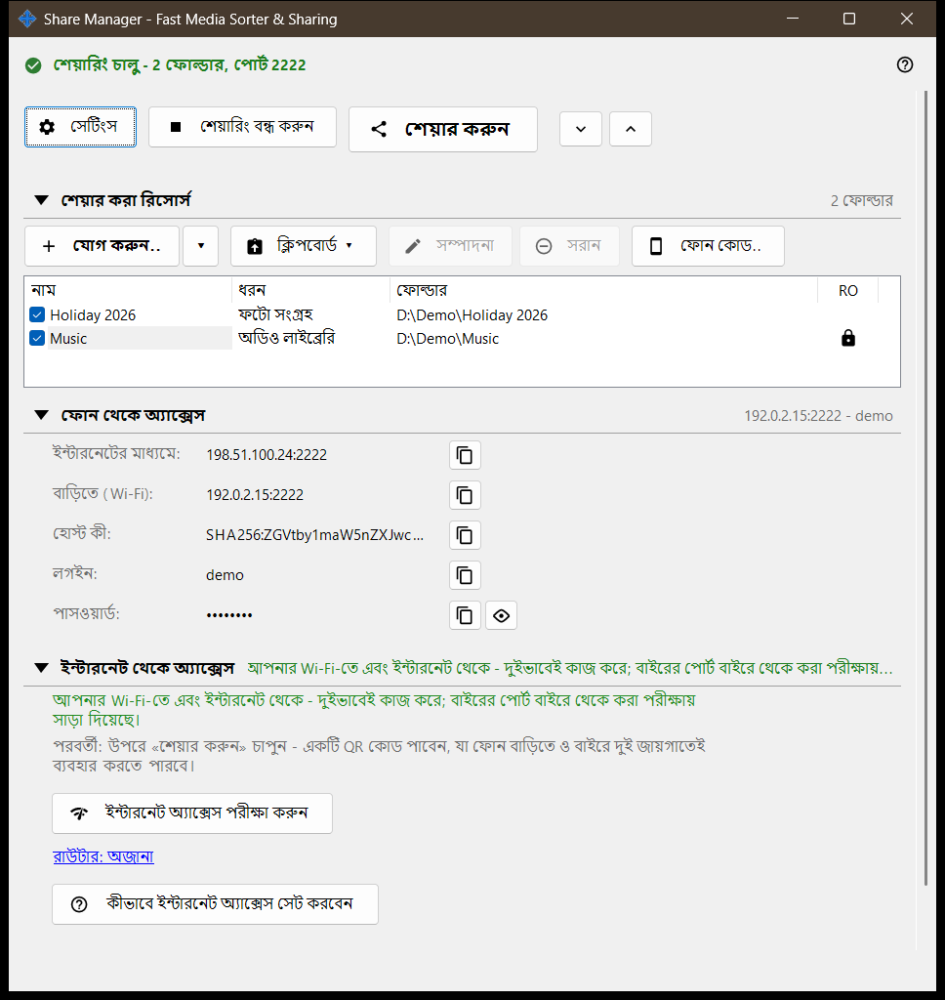
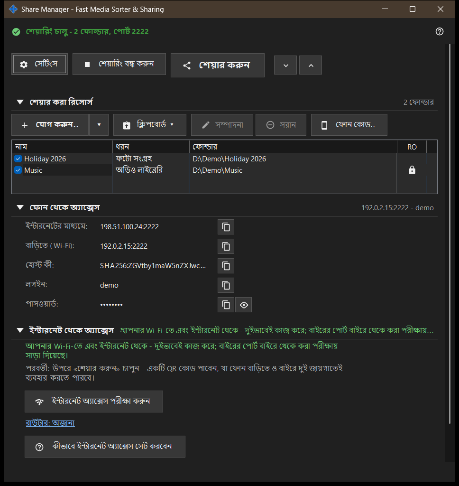

Share Manager - Fast Media Sorter & Sharing
এটি কীসের জন্য
Share Manager-এর মূল উইন্ডো, যা স্থানীয় শেয়ারিং ও সময়সূচি পরিষেবা। এটি এই পিসি SFTP-র মাধ্যমে ফোনের সঙ্গে যেসব ফোল্ডার শেয়ার করে তার তালিকা দেখায়, শেয়ারিং শুরু ও বন্ধ করে, অ্যাক্সেস কোড দেয় এবং দেখায় ফোন কীভাবে পিসিতে পৌঁছাতে পারে। সময়সূচিবদ্ধ অপারেশন ও এক্সচেঞ্জ অ্যাকাউন্টের পৃষ্ঠা ম্যানেজার সেটিংসে আছে। এটি ভিউয়ার থেকে বা ট্রে আইকন থেকে খোলে; উইন্ডো বন্ধ করলে অ্যাপ ট্রেতে থেকে যায়।


এই ক্রমে
- যোগ করুন.. চাপুন এবং তালিকায় ফোল্ডার রাখতে ফোল্ডার.. বেছে নিন।
- ফোল্ডারে টিক দিন: টিক দেওয়া ফোল্ডারগুলোই পরিবেশিত হয়।
- শেয়ারিং শুরু করুন চাপুন (এর জন্য অন্তত একটি টিক দেওয়া ফোল্ডার লাগে)।
- ফোনের জন্য QR কোড বা .fmscfg ফাইল পেতে শেয়ার করুন চাপুন।
- বাড়ির নেটওয়ার্কের বাইরে থেকে অ্যাক্সেসের জন্য ইন্টারনেট থেকে অ্যাক্সেস গোষ্ঠী খুলে তার দুটি বোতাম ব্যবহার করুন।
- কাজ শেষ হলে শেয়ারিং বন্ধ করুন চাপুন।
উপাদানসমূহ
উপরের সারি
সেটিংস ম্যানেজারের সেটিংস খোলে। সার্ভার চলার সময় শেয়ারিং শুরু করুন বোতামটি শেয়ারিং বন্ধ করুন হয়ে যায়। শেয়ার করুন অ্যাক্সেস কোডের উইজার্ড খোলে এবং কেবল শেয়ারিং চালু থাকলেই কাজ করে; নইলে ইঙ্গিত বলে আগে সার্ভার চালু করতে। সব খুলুন ও সব গুটিয়ে নিন নিচের গোষ্ঠীগুলো খোলে বা বন্ধ করে।
শেয়ার করা রিসোর্স
প্রতিটি রিসোর্সের জন্য একটি সারি, একটি চেক বক্স এবং নাম, ধরন ও ফোল্ডার কলাম। টিক দেওয়া সারি ফোনগুলোকে পরিবেশন করা হয়; তালিকা ফাঁকা থাকলে প্রথম রিসোর্স যোগ করুন.. দেখায়। শেষ টিক দেওয়া ফোল্ডারের টিক তুললে উইন্ডো জিজ্ঞেস করে শেয়ারিং বন্ধ করা হবে কি না, কারণ সংযুক্ত ফোনগুলো বিচ্ছিন্ন হবে। কোনো টিক ছাড়া শেয়ারিং শুরু করলে শুধু এই ইঙ্গিত আসে: প্রথমে একটি ফোল্ডার যোগ করে তাতে টিক দিন।
ফোন থেকে অ্যাক্সেস
ফোন বা যেকোনো SFTP ক্লায়েন্টের জন্য প্রয়োজনীয় সংযোগের তথ্য: ইন্টারনেটে ও বাড়িতে (Wi-Fi) ঠিকানা, IPv6, হোস্ট কী, লগইন ও পাসওয়ার্ড। পাসওয়ার্ড দেখান সেটি প্রকাশ করে এবং পাসওয়ার্ড লুকান আবার ঢেকে দেয়। গোষ্ঠীর নিচের লেখা জানায় ফোন পিসিতে শুধু বাড়িতে পৌঁছায় নাকি বাইরে থেকেও।
ইন্টারনেট থেকে অ্যাক্সেস
ইন্টারনেট অ্যাক্সেস পরীক্ষা করুন ইন্টারনেট অ্যাক্সেস পরীক্ষার উইন্ডো খোলে। কীভাবে ইন্টারনেট অ্যাক্সেস সেট করবেন রাউটারের নির্দেশিকা খোলে। রাউটার: .. লিংক রাউটারের নিজস্ব পৃষ্ঠা খোলে; কোনো রাউটার না পেলে এতে রাউটার: অজানা লেখা থাকে। গোষ্ঠীতে একটি সতর্কবার্তা আছে: ঠিকানা, লগইন ও পাসওয়ার্ড যে জানবে সে-ই প্রতিটি শেয়ার করা ফোল্ডারে পৌঁছাতে পারবে, তাই QR কোড বা .fmscfg ফাইল প্রকাশ করবেন না এবং কাজ শেষ হলে শেয়ারিং বন্ধ করে দিন।
পরিসংখ্যান
গোষ্ঠীগুলোর নিচে পরিসংখ্যান লিংক একটি ছোট সারসংক্ষেপের পাশে থাকে, যেমন N সংযোগ, M ফাইল। লিংকটি পূর্ণ কাউন্টারসহ শেয়ারিং স্ট্যাটাসের উইন্ডো খোলে।
সার্ভার বৈশিষ্ট্য বন্ধ থাকলে
সার্ভার উপাদান চালু না হওয়া পর্যন্ত উইন্ডো সার্ভার বৈশিষ্ট্য বন্ধ এবং সার্ভার বৈশিষ্ট্য চালু করুন.. বোতাম দেখায়, যা ফোল্ডার শেয়ারিং চালু করুন উইন্ডো খোলে। ইনস্টলেশনে শেয়ারিং উপাদান না থাকলে উইন্ডো তা জানায় এবং অ্যাপটি আবার ইনস্টল করতে বলে।
ম্যানেজার সেটিংস · SFTP শেয়ারিং সেটিংস · এক্সচেঞ্জ সার্ভার সেটিংস